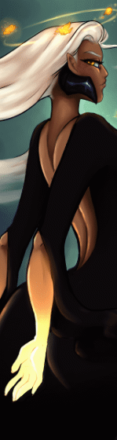

About Dream-Woman
Dream Woman is the reoccurring visitor inside Beatrice's dreams. She's often seen with glowing eyes and glowing freckles.
Dream-Woman glowing in the abyssal realm
Dream-Woman's characteristic
- She has long blonde hair
- She has golden eyes that glow in the dark
- She has freckles that glow
Dream-Woman's Host
Dream-Woman's host is Beatrice, after releasing her from the Abyssal stone Dream-Woman and Beatrice merged, almost sharing minds, but not quite, ex: